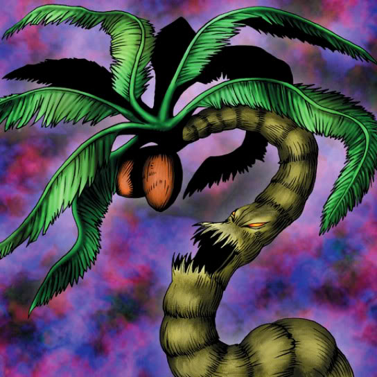

Yashinoki

Description: "When this card is flipped face-up, LP increases 500 points."
STATS
ATK: 800
DEF: 600DECK COST
Deck Cost per Card: 19EFFECT NOT IMPLEMENTED
Fusion List (21 Possible Fusions)
- Yashinoki + Air Marmot of Nefariousness = Flower Wolf
- Yashinoki + Arlownay = Queen of Autumn Leaves
- Yashinoki + Beautiful Beast Trainer = Queen of Autumn Leaves
- Yashinoki + Blue-Eyed Silver Zombie = Wood Remains
- Yashinoki + Crawling Dragon #2 = B. Dragon Jungle King
- Yashinoki + Dancing Elf = Queen of Autumn Leaves
- Yashinoki + Fairy's Gift = Queen of Autumn Leaves
- Yashinoki + Flame Ghost = Pumpking the King of Ghosts
- Yashinoki + Frenzied Panda = Flower Wolf
- Yashinoki + Graveyard and the Hand of Invitation = Wood Remains
- Yashinoki + Greenkappa = Bean Soldier
- Yashinoki + M-Warrior #1 = Bean Soldier
- Yashinoki + M-Warrior #2 = Bean Soldier
- Yashinoki + Masked Clown = Bean Soldier
- Yashinoki + Milus Radiant = Flower Wolf
- Yashinoki + Monster Eye = Rose Spectre of Dunn
- Yashinoki + Nemuriko = Queen of Autumn Leaves
- Yashinoki + Skull Servant = Wood Remains
- Yashinoki + The Drdek = Rose Spectre of Dunn
- Yashinoki + Waterdragon Fairy = Queen of Autumn Leaves
- Yashinoki + Yamatano Dragon Scroll = B. Dragon Jungle King